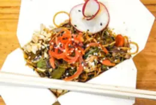

Envases compostables
Todo nuestro embalaje es 100 % compostable o de cartón reciclado.
Dark kitchen · Madrid
Cocinamos wok y street food tailandesa adaptada al paladar occidental, solo para llevar y con envases 100 % compostables o de cartón reciclado.
Trabaja con nosotrosTodo nuestro embalaje es 100 % compostable o de cartón reciclado.
Medimos y mostramos el impacto de cada pedido para que se vea el resultado.
Entregamos a diario caldos y guisos a refugios sociales.
Flota de bicis y motos eléctricas, con repartidores contratados de verdad. Y el programa Eco-Lokos premia a quien repite.

Tenemos 7 ofertas abiertas en cocina, reparto y gestión, con salario y condiciones a la vista.
Ver ofertas